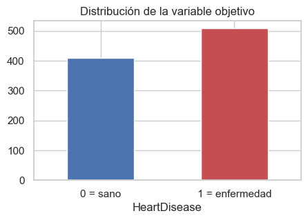
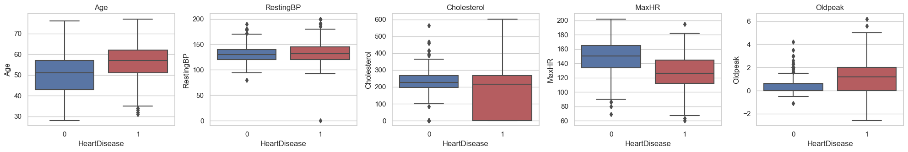
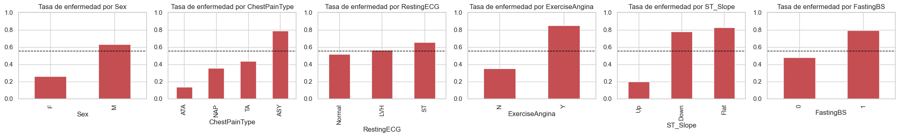
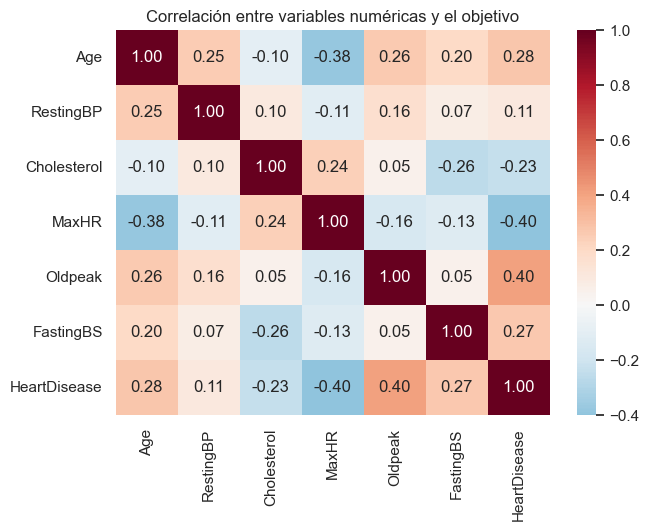
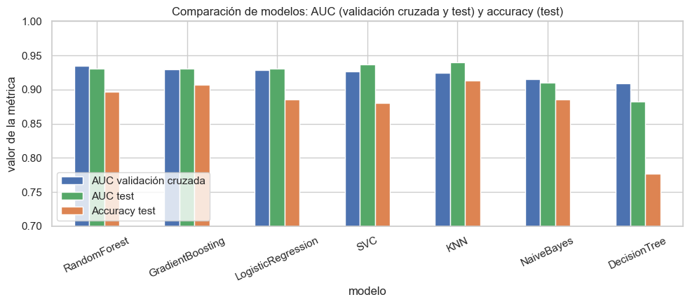

4. Etapa 1 · Análisis exploratorio, preprocesamiento y detección de data leakage#
Proyecto: predicción de falla cardíaca (Heart Failure Prediction Dataset, Kaggle).
Objetivo: clasificación binaria, HeartDisease = 1 (enfermedad) o 0 (sano).
Este cuaderno cubre la Etapa 1 del proyecto:
Exploración del dataset y tratamiento de valores nulos.
Demostración de tres formas de fuga de datos (data leakage) y del flujo correcto.
Comparación de siete clasificadores con
Pipeline+GridSearchCV(AUC y accuracy) y ranking final.
El código de entrenamiento y evaluación está encapsulado en funciones reutilizables del
módulo src/modelado.py.
import sys # Acceso a la configuración del intérprete de Python
sys.path.insert(0, "..") # Agrega la carpeta raíz del proyecto para poder importar el paquete src
import warnings # Control de mensajes de advertencia
import numpy as np # Cálculo numérico y generación de números aleatorios
import pandas as pd # Manejo de tablas de datos
import matplotlib.pyplot as plt # Creación de gráficos
import seaborn as sns # Gráficos estadísticos de alto nivel
from sklearn.feature_selection import SelectKBest, f_classif # Selección de variables por prueba F (para una de las demostraciones)
from sklearn.linear_model import LogisticRegression # Regresión logística
from sklearn.metrics import roc_auc_score # Área bajo la curva ROC
from sklearn.model_selection import GridSearchCV, cross_val_score, train_test_split # Búsqueda de hiperparámetros, validación cruzada y partición
from sklearn.pipeline import Pipeline # Encadenamiento de transformaciones y modelo
from sklearn.preprocessing import MinMaxScaler # Escalado de variables al rango [0, 1]
from sklearn.svm import SVC # Máquina de vectores de soporte
from src import modelado as mod # Funciones reutilizables del proyecto
warnings.filterwarnings("ignore", category=FutureWarning) # Oculta avisos de versiones futuras de las librerías
sns.set_theme(style="whitegrid") # Estilo visual de los gráficos
pd.set_option("display.width", 160) # Ancho de impresión de las tablas
4.1. 1. Carga y exploración del dataset#
df = pd.read_csv(mod.RUTA_DATOS) # Lee el archivo data/heart.csv
print(f"Dimensión: {df.shape[0]} pacientes × {df.shape[1]} columnas") # Número de filas y columnas
df.head() # Muestra las primeras cinco filas para verificar la lectura
Dimensión: 918 pacientes × 12 columnas
| Age | Sex | ChestPainType | RestingBP | Cholesterol | FastingBS | RestingECG | MaxHR | ExerciseAngina | Oldpeak | ST_Slope | HeartDisease | |
|---|---|---|---|---|---|---|---|---|---|---|---|---|
| 0 | 40 | M | ATA | 140 | 289 | 0 | Normal | 172 | N | 0.0 | Up | 0 |
| 1 | 49 | F | NAP | 160 | 180 | 0 | Normal | 156 | N | 1.0 | Flat | 1 |
| 2 | 37 | M | ATA | 130 | 283 | 0 | ST | 98 | N | 0.0 | Up | 0 |
| 3 | 48 | F | ASY | 138 | 214 | 0 | Normal | 108 | Y | 1.5 | Flat | 1 |
| 4 | 54 | M | NAP | 150 | 195 | 0 | Normal | 122 | N | 0.0 | Up | 0 |
df.info() # Tipo de dato y cantidad de valores no nulos de cada columna
<class 'pandas.core.frame.DataFrame'>
RangeIndex: 918 entries, 0 to 917
Data columns (total 12 columns):
# Column Non-Null Count Dtype
--- ------ -------------- -----
0 Age 918 non-null int64
1 Sex 918 non-null object
2 ChestPainType 918 non-null object
3 RestingBP 918 non-null int64
4 Cholesterol 918 non-null int64
5 FastingBS 918 non-null int64
6 RestingECG 918 non-null object
7 MaxHR 918 non-null int64
8 ExerciseAngina 918 non-null object
9 Oldpeak 918 non-null float64
10 ST_Slope 918 non-null object
11 HeartDisease 918 non-null int64
dtypes: float64(1), int64(6), object(5)
memory usage: 86.2+ KB
df.describe().T # Estadísticas descriptivas de las variables numéricas
| count | mean | std | min | 25% | 50% | 75% | max | |
|---|---|---|---|---|---|---|---|---|
| Age | 918.0 | 53.510893 | 9.432617 | 28.0 | 47.00 | 54.0 | 60.0 | 77.0 |
| RestingBP | 918.0 | 132.396514 | 18.514154 | 0.0 | 120.00 | 130.0 | 140.0 | 200.0 |
| Cholesterol | 918.0 | 198.799564 | 109.384145 | 0.0 | 173.25 | 223.0 | 267.0 | 603.0 |
| FastingBS | 918.0 | 0.233115 | 0.423046 | 0.0 | 0.00 | 0.0 | 0.0 | 1.0 |
| MaxHR | 918.0 | 136.809368 | 25.460334 | 60.0 | 120.00 | 138.0 | 156.0 | 202.0 |
| Oldpeak | 918.0 | 0.887364 | 1.066570 | -2.6 | 0.00 | 0.6 | 1.5 | 6.2 |
| HeartDisease | 918.0 | 0.553377 | 0.497414 | 0.0 | 0.00 | 1.0 | 1.0 | 1.0 |
Variable |
Significado |
|---|---|
|
Edad (años) |
|
Sexo (M/F) |
|
Tipo de dolor torácico: TA (angina típica), ATA (atípica), NAP (no anginoso), ASY (asintomático) |
|
Presión arterial en reposo (mm Hg) |
|
Colesterol sérico (mg/dl) |
|
Glucosa en ayunas > 120 mg/dl (1 = sí) |
|
Electrocardiograma en reposo: Normal, ST, LVH |
|
Frecuencia cardíaca máxima alcanzada |
|
Angina inducida por ejercicio (Y/N) |
|
Depresión del segmento ST inducida por ejercicio |
|
Pendiente del segmento ST: Up, Flat, Down |
|
Objetivo: 1 = enfermedad cardíaca |
conteo = df[mod.OBJETIVO].value_counts().sort_index() # Número de pacientes sanos (0) y enfermos (1)
print(pd.DataFrame({"n": conteo, "%": (100 * conteo / len(df)).round(1)})) # Tabla con conteos y porcentajes
conteo.plot.bar(color=["#4C72B0", "#C44E52"], figsize=(5, 3), title="Distribución de la variable objetivo") # Gráfico de barras de las clases
plt.xticks([0, 1], ["0 = sano", "1 = enfermedad"], rotation=0) # Etiquetas legibles en el eje X
plt.show() # Muestra el gráfico
n %
HeartDisease
0 410 44.7
1 508 55.3

Las clases están razonablemente balanceadas (55 % con enfermedad, 45 % sanos), por lo que no hace falta remuestreo; aun así las particiones se harán estratificadas.
4.1.1. Valores nulos y ceros imposibles#
print("Nulos explícitos por columna:", int(df.isna().sum().sum())) # El archivo no tiene celdas vacías
print("Filas duplicadas:", int(df.duplicated().sum())) # Tampoco hay pacientes repetidos
ceros = (df[mod.COLUMNAS_CON_CEROS] == 0).sum() # Cuenta los ceros en presión arterial y colesterol
print("\nCeros fisiológicamente imposibles:") # Encabezado
print(ceros) # Muestra el conteo por columna
sin_col = df["Cholesterol"] == 0 # Máscara de pacientes sin medición de colesterol
print(f"\nTasa de enfermedad con Cholesterol = 0: {df.loc[sin_col, mod.OBJETIVO].mean():.1%}") # Enfermos entre quienes no tienen el dato
print(f"Tasa de enfermedad con Cholesterol > 0: {df.loc[~sin_col, mod.OBJETIVO].mean():.1%}") # Enfermos entre quienes sí lo tienen
Nulos explícitos por columna: 0
Filas duplicadas: 0
Ceros fisiológicamente imposibles:
RestingBP 1
Cholesterol 172
dtype: int64
Tasa de enfermedad con Cholesterol = 0: 88.4%
Tasa de enfermedad con Cholesterol > 0: 47.7%
El archivo no tiene nulos explícitos, pero 172 pacientes (18,7 %) tienen Cholesterol = 0
y uno tiene RestingBP = 0: valores imposibles que en realidad son datos no medidos.
Además, la ausencia del dato es informativa: el 88 % de los pacientes sin colesterol
registrado tiene enfermedad, frente al 48 % del resto (probablemente provienen de un hospital
o protocolo distinto).
Decisión de preprocesamiento: dentro del Pipeline, los ceros de esas dos columnas se
tratan como faltantes, se imputan con la mediana aprendida solo en train y se agrega una
columna indicadora de «dato faltante». Hacerlo dentro del Pipeline evita la fuga de datos.
4.1.2. Variables numéricas y categóricas frente al objetivo#
numericas = ["Age", "RestingBP", "Cholesterol", "MaxHR", "Oldpeak"] # Variables numéricas continuas
fig, axes = plt.subplots(1, 5, figsize=(20, 3.5)) # Una fila con cinco gráficos
for ax, col in zip(axes, numericas): # Recorre cada variable numérica
sns.boxplot(data=df, x=mod.OBJETIVO, y=col, ax=ax, palette=["#4C72B0", "#C44E52"]) # Diagrama de caja por clase
ax.set_title(col) # Título con el nombre de la variable
fig.tight_layout() # Ajusta los márgenes
plt.show() # Muestra la figura

fig, axes = plt.subplots(1, 6, figsize=(22, 3.5)) # Una fila con seis gráficos
for ax, col in zip(axes, mod.COLUMNAS_CATEGORICAS + ["FastingBS"]): # Recorre las categóricas y la glucosa en ayunas
tasa = df.groupby(col)[mod.OBJETIVO].mean().sort_values() # Proporción de enfermos en cada categoría
tasa.plot.bar(ax=ax, color="#C44E52") # Barras con la tasa de enfermedad
ax.axhline(df[mod.OBJETIVO].mean(), color="black", ls="--", lw=1) # Línea de la tasa global como referencia
ax.set_title(f"Tasa de enfermedad por {col}") # Título
ax.set_ylim(0, 1) # Misma escala en todos los gráficos
fig.tight_layout() # Ajusta los márgenes
plt.show() # Muestra la figura

corr = df[numericas + ["FastingBS", mod.OBJETIVO]].corr() # Matriz de correlación de Pearson
plt.figure(figsize=(7, 5)) # Tamaño de la figura
sns.heatmap(corr, annot=True, fmt=".2f", cmap="RdBu_r", center=0) # Mapa de calor con los coeficientes
plt.title("Correlación entre variables numéricas y el objetivo") # Título
plt.show() # Muestra la figura

Hallazgos del análisis exploratorio.
Los pacientes con enfermedad son mayores, alcanzan menor frecuencia cardíaca máxima (
MaxHR) y tienen mayorOldpeak.Las categóricas discriminan con fuerza: pendiente ST plana o descendente (
ST_Slope), dolor torácico asintomático (ASY) y angina inducida por ejercicio elevan la tasa de enfermedad por encima del 75–80 %.No hay correlaciones altas entre predictoras numéricas (|r| < 0,4), así que no se elimina ninguna variable.
La correlación negativa de
Cholesterolcon el objetivo es un artefacto de los ceros.
4.2. 2. Demostración de data leakage#
Hay fuga de datos cuando el modelo recibe, durante el entrenamiento o la validación, información que no tendría en producción. Se muestran tres casos y el flujo correcto.
Nota sobre el ejemplo del enunciado. El código de referencia agrega
leaky_featureaXy la usa tanto en el flujo «con fuga» como en el flujo «sin fuga», por lo que ambos darían AUC ≈ 1. Aquí se separan los casos para que se vea qué produce cada tipo de fuga.
X, y = mod.cargar_datos() # Carga las 11 variables predictoras y el objetivo
X_num = pd.get_dummies(X, drop_first=True).astype(float) # Versión totalmente numérica (variables dummy) para los flujos "ingenuos"
resultados_fuga = {} # Diccionario donde se guarda el AUC de cada escenario
4.2.1. Caso A: fuga del objetivo (target leakage)#
Se agrega una variable artificial construida a partir de la propia etiqueta. En la práctica equivale a incluir información registrada después del diagnóstico (por ejemplo, el tratamiento recetado).
rng = np.random.default_rng(0) # Generador aleatorio reproducible
X_fuga = X_num.copy() # Copia de las variables numéricas
X_fuga["leaky_feature"] = y + rng.normal(0, 0.01, size=len(y)) # Variable casi idéntica a la etiqueta (etiqueta + ruido mínimo)
escalador = MinMaxScaler() # Escalador a [0, 1]
X_fuga_esc = escalador.fit_transform(X_fuga) # ERROR deliberado: el escalador se ajusta con TODOS los datos antes de dividir
X_tr_l, X_te_l, y_tr_l, y_te_l = train_test_split(X_fuga_esc, y, test_size=0.2, random_state=42, stratify=y) # Partición posterior al escalado
grid_l = GridSearchCV(SVC(probability=True), {"C": [0.1, 1, 10], "gamma": [0.01, 0.1]}, cv=5, scoring="roc_auc") # Búsqueda de hiperparámetros del enunciado
grid_l.fit(X_tr_l, y_tr_l) # Entrena con la variable que filtra la respuesta
resultados_fuga["A. Fuga del objetivo (leaky_feature)"] = roc_auc_score(y_te_l, grid_l.predict_proba(X_te_l)[:, 1]) # AUC en test (artificialmente perfecto)
print(f"AUC con leaky_feature: {resultados_fuga['A. Fuga del objetivo (leaky_feature)']:.3f}") # Reporta el resultado
AUC con leaky_feature: 1.000
El AUC es prácticamente 1: el modelo «adivina» porque una variable contiene la respuesta.
Un Pipeline no protege contra este tipo de fuga; solo se evita revisando que cada
variable esté disponible en el momento de predecir. Señal de alarma: un desempeño
demasiado bueno para ser cierto.
4.2.2. Caso B: fuga por preprocesamiento antes de dividir#
Se elimina la variable artificial, pero se mantiene el otro error del flujo anterior: imputar y escalar con todos los datos antes de la partición. Así, la mediana, el mínimo y el máximo usados para transformar train ya «vieron» el conjunto de prueba.
X_b = X_num.copy() # Variables numéricas sin la variable artificial
for col in mod.COLUMNAS_CON_CEROS: # Recorre presión arterial y colesterol
X_b[col] = X_b[col].replace(0, np.nan) # Convierte los ceros imposibles en faltantes
X_b[col] = X_b[col].fillna(X_b[col].median()) # ERROR deliberado: mediana calculada con todos los datos (train + test)
X_b_esc = MinMaxScaler().fit_transform(X_b) # ERROR deliberado: escalado ajustado con todos los datos
X_tr_b, X_te_b, y_tr_b, y_te_b = train_test_split(X_b_esc, y, test_size=0.2, random_state=42, stratify=y) # Partición posterior
grid_b = GridSearchCV(SVC(probability=True), {"C": [0.1, 1, 10], "gamma": [0.01, 0.1]}, cv=5, scoring="roc_auc") # Misma búsqueda
grid_b.fit(X_tr_b, y_tr_b) # Entrenamiento
resultados_fuga["B. Preprocesamiento antes de dividir"] = roc_auc_score(y_te_b, grid_b.predict_proba(X_te_b)[:, 1]) # AUC en test
print(f"AUC con preprocesamiento antes de dividir: {resultados_fuga['B. Preprocesamiento antes de dividir']:.3f}") # Reporta el resultado
AUC con preprocesamiento antes de dividir: 0.930
4.2.3. Caso C: selección de variables antes de la validación cruzada#
El efecto del caso B suele ser pequeño cuando la transformación es simple. Para ver cuánto puede engañar una fuga de preprocesamiento se usa un ejemplo extremo: 5.000 variables de ruido puro y etiquetas reales. Si se eligen las 20 «mejores» variables usando todos los datos y luego se valida, el AUC parece alto aunque no existe ninguna señal.
ruido = rng.normal(size=(len(y), 5000)) # 5.000 variables aleatorias sin relación alguna con la enfermedad
seleccion_previa = SelectKBest(f_classif, k=20).fit_transform(ruido, y) # ERROR deliberado: selección con todas las filas (incluye las de validación)
auc_mal = cross_val_score(LogisticRegression(max_iter=1000), seleccion_previa, y, cv=5, scoring="roc_auc").mean() # Validación cruzada sobre variables ya "contaminadas"
flujo_ok = Pipeline([("seleccion", SelectKBest(f_classif, k=20)), ("clf", LogisticRegression(max_iter=1000))]) # Flujo correcto: la selección va dentro del Pipeline
auc_bien = cross_val_score(flujo_ok, ruido, y, cv=5, scoring="roc_auc").mean() # La selección se repite en cada pliegue solo con su parte de entrenamiento
resultados_fuga["C. Ruido puro, selección ANTES de validar"] = auc_mal # Guarda el AUC inflado
resultados_fuga["C. Ruido puro, selección DENTRO del Pipeline"] = auc_bien # Guarda el AUC honesto
print(f"AUC (ruido) con selección previa: {auc_mal:.3f} | con Pipeline: {auc_bien:.3f}") # Reporta ambos
AUC (ruido) con selección previa: 0.709 | con Pipeline: 0.487
4.2.4. Flujo correcto (sin fuga)#
Se divide primero en train y test.
Todo el preprocesamiento (imputación, escalado, codificación) vive dentro de un
Pipeline, de modo queGridSearchCVlo reajusta en cada pliegue solo con la parte de entrenamiento.El conjunto de prueba se usa una única vez, al final.
X_train, X_test, y_train, y_test = mod.dividir_datos(X, y) # Partición 80/20 estratificada ANTES de transformar
modelo_svc, malla_svc = mod.obtener_modelos()["SVC"] # SVC y su malla de hiperparámetros (la del enunciado)
grid_svc = mod.train_pipeline(X_train, y_train, modelo_svc, malla_svc) # Pipeline + GridSearchCV con validación cruzada de 5 pliegues
resultados_fuga["Flujo correcto (Pipeline, sin fuga)"] = roc_auc_score(y_test, grid_svc.predict_proba(X_test)[:, 1]) # AUC honesto en test
tabla_fuga = pd.Series(resultados_fuga, name="AUC").to_frame() # Tabla con el AUC de cada escenario
tabla_fuga # Muestra la tabla comparativa
| AUC | |
|---|---|
| A. Fuga del objetivo (leaky_feature) | 1.000000 |
| B. Preprocesamiento antes de dividir | 0.929818 |
| C. Ruido puro, selección ANTES de validar | 0.708895 |
| C. Ruido puro, selección DENTRO del Pipeline | 0.486944 |
| Flujo correcto (Pipeline, sin fuga) | 0.937351 |
Lectura de la tabla.
Caso A (AUC = 1,000): la variable derivada de la etiqueta produce un modelo «perfecto» que sería inútil en producción, donde esa variable no existe.
Caso B (AUC = 0,930): imputar y escalar antes de dividir no infló el resultado aquí; de hecho quedó ligeramente por debajo del flujo correcto (0,937), cuyo preprocesamiento es además más completo (indicador de dato faltante). Con transformaciones simples y 918 filas, la mediana y el rango cambian muy poco al incluir el test. Aun así el procedimiento es incorrecto: la estimación deja de ser honesta y el sesgo crece con muestras pequeñas o transformaciones más agresivas, como muestra el caso C.
Caso C (AUC = 0,709 frente a 0,487): con variables de ruido puro, seleccionar antes de validar aparenta un AUC de 0,71 donde no hay ninguna señal; con la selección dentro del
Pipelineel AUC vuelve a ≈ 0,5, el valor del azar.Flujo correcto (AUC = 0,937): es el desempeño que realmente puede esperarse del SVC.
Regla práctica: dividir primero, y que todo lo que «aprenda» de los datos (imputar,
escalar, codificar, seleccionar variables) viva dentro del Pipeline.
4.3. 3. Comparación de modelos con Pipeline + GridSearchCV#
Se entrenan siete clasificadores con el flujo sin fuga. Todos comparten el mismo
preprocesamiento (construir_preprocesador) y la misma función de entrenamiento:
def train_pipeline(X_train, y_train, model, param_grid, cv=5, scoring="roc_auc"):
pipe = Pipeline([("prep", construir_preprocesador()), ("clf", model)])
pliegues = StratifiedKFold(n_splits=cv, shuffle=True, random_state=SEMILLA)
grid = GridSearchCV(pipe, param_grid, cv=pliegues, scoring=scoring, n_jobs=-1)
grid.fit(X_train, y_train)
return grid
El ranking se ordena por el AUC de validación cruzada (calculado solo con train), no por el AUC de test: elegir el modelo mirando el test sería otra forma de fuga.
ranking, busquedas = mod.comparar_modelos(X_train, y_train, X_test, y_test) # Entrena y evalúa los siete modelos
ranking[["modelo", "auc_cv", "auc_test", "accuracy_test", "precision_test", "recall_test", "f1_test"]].round(4) # Ranking comparativo
C:\DanielSR\Projects\proyecto_heart_disease\.venv\lib\site-packages\joblib\externals\loky\backend\context.py:136: UserWarning: Could not find the number of physical cores for the following reason:
[WinError 2] El sistema no puede encontrar el archivo especificado
Returning the number of logical cores instead. You can silence this warning by setting LOKY_MAX_CPU_COUNT to the number of cores you want to use.
warnings.warn(
File "C:\DanielSR\Projects\proyecto_heart_disease\.venv\lib\site-packages\joblib\externals\loky\backend\context.py", line 257, in _count_physical_cores
cpu_info = subprocess.run(
File "C:\Users\user-pc\.conda\envs\ml_venv\lib\subprocess.py", line 505, in run
with Popen(*popenargs, **kwargs) as process:
File "C:\Users\user-pc\.conda\envs\ml_venv\lib\subprocess.py", line 951, in __init__
self._execute_child(args, executable, preexec_fn, close_fds,
File "C:\Users\user-pc\.conda\envs\ml_venv\lib\subprocess.py", line 1436, in _execute_child
hp, ht, pid, tid = _winapi.CreateProcess(executable, args,
| modelo | auc_cv | auc_test | accuracy_test | precision_test | recall_test | f1_test | |
|---|---|---|---|---|---|---|---|
| posicion | |||||||
| 1 | RandomForest | 0.9345 | 0.9304 | 0.8967 | 0.8807 | 0.9412 | 0.9100 |
| 2 | GradientBoosting | 0.9295 | 0.9306 | 0.9076 | 0.8972 | 0.9412 | 0.9187 |
| 3 | LogisticRegression | 0.9287 | 0.9304 | 0.8859 | 0.8785 | 0.9216 | 0.8995 |
| 4 | SVC | 0.9269 | 0.9374 | 0.8804 | 0.8704 | 0.9216 | 0.8952 |
| 5 | KNN | 0.9245 | 0.9402 | 0.9130 | 0.9057 | 0.9412 | 0.9231 |
| 6 | NaiveBayes | 0.9151 | 0.9099 | 0.8859 | 0.8857 | 0.9118 | 0.8986 |
| 7 | DecisionTree | 0.9087 | 0.8821 | 0.7772 | 0.7905 | 0.8137 | 0.8019 |
for _, fila in ranking.iterrows(): # Recorre el ranking
print(f"{fila['modelo']:<20} {fila['mejores_parametros']}") # Muestra los hiperparámetros ganadores de cada modelo
RandomForest {'clf__max_depth': None, 'clf__min_samples_leaf': 5, 'clf__n_estimators': 300}
GradientBoosting {'clf__learning_rate': 0.05, 'clf__max_depth': 2, 'clf__n_estimators': 100}
LogisticRegression {'clf__C': 1}
SVC {'clf__C': 1, 'clf__gamma': 0.1}
KNN {'clf__n_neighbors': 31, 'clf__weights': 'distance'}
NaiveBayes {'clf__var_smoothing': 1e-09}
DecisionTree {'clf__max_depth': 5, 'clf__min_samples_leaf': 20}
fig, ax = plt.subplots(figsize=(10, 4.5)) # Figura para el gráfico comparativo
ranking.set_index("modelo")[["auc_cv", "auc_test", "accuracy_test"]].plot.bar(ax=ax, color=["#4C72B0", "#55A868", "#DD8452"]) # Barras agrupadas por modelo
ax.set_ylim(0.7, 1.0) # Acerca la escala para apreciar las diferencias
ax.set_ylabel("valor de la métrica") # Etiqueta del eje Y
ax.set_title("Comparación de modelos: AUC (validación cruzada y test) y accuracy (test)") # Título
ax.legend(["AUC validación cruzada", "AUC test", "Accuracy test"], loc="lower left") # Leyenda
plt.xticks(rotation=25) # Inclina los nombres de los modelos
plt.tight_layout() # Ajusta los márgenes
plt.show() # Muestra el gráfico

Lectura del ranking.
Posición |
Modelo |
AUC validación cruzada |
AUC test |
Accuracy test |
|---|---|---|---|---|
1 |
RandomForest |
0,9345 |
0,9304 |
0,897 |
2 |
GradientBoosting |
0,9295 |
0,9306 |
0,908 |
3 |
LogisticRegression |
0,9287 |
0,9304 |
0,886 |
4 |
SVC (modelo base) |
0,9269 |
0,9374 |
0,880 |
5 |
KNN |
0,9245 |
0,9402 |
0,913 |
6 |
NaiveBayes |
0,9151 |
0,9099 |
0,886 |
7 |
DecisionTree |
0,9087 |
0,8821 |
0,777 |
Los cinco primeros modelos están prácticamente empatados: sus AUC de validación cruzada difieren en 0,01, menos que la variación entre pliegues (desviación ≈ 0,03). Frente al SVC del enunciado, RandomForest, GradientBoosting y la regresión logística obtienen un AUC de validación algo mayor, pero la diferencia no es concluyente.
En test el orden cambia (KNN y SVC quedan arriba), lo que confirma que con 184 pacientes de prueba las diferencias pequeñas son ruido. Por eso el modelo se elige con la validación cruzada y el test solo se usa para reportar.
El árbol de decisión individual es claramente el peor (AUC test 0,882; accuracy 0,777): un solo árbol es inestable, y los ensambles corrigen justamente eso.
Salvo el árbol individual, todos los modelos detectan más del 91 % de los enfermos (recall) con el umbral 0,5.
4.4. 4. Conclusiones de la Etapa 1#
El dataset no tiene nulos explícitos, pero sí ceros imposibles en
Cholesterol(18,7 %) yRestingBP; se tratan como faltantes dentro delPipeline, con indicador.Una variable que filtra la etiqueta lleva el AUC a 1,0; el preprocesamiento antes de dividir puede fabricar desempeño inexistente (0,71 con ruido puro). El
Pipelineevita la segunda fuga, no la primera.Con el flujo correcto, el AUC real del problema ronda 0,93 para varios modelos. Se selecciona RandomForest por tener el mayor AUC de validación cruzada; el siguiente cuaderno lo evalúa en detalle y lo exporta para la API.